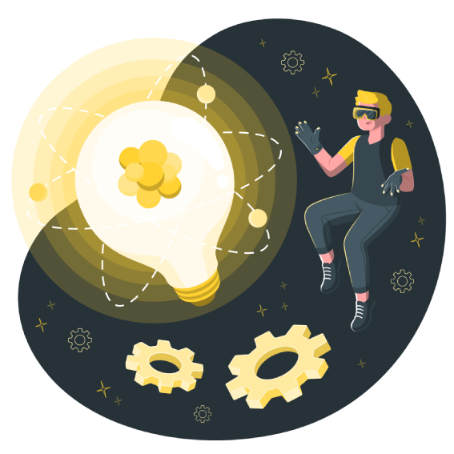

PlaywrightTestes E2E
01 Desenvolvimento, QA & Automação
Transformo ideias em software confiável — do código à qualidade.
Olá, sou o Wellington. Sou desenvolvedor de software e, no meu trabalho atual, atuo principalmente como QA e automatizador de testes. Também contribuo com desenvolvimento e crio projetos pessoais para praticar, experimentar tecnologias e evoluir continuamente.

Código & testes
com propósito
com propósito
Desenvolvimento com qualidade
01 Sobre mim
Código com qualidade
Entre desenvolvimento e qualidade, enxergo o produto por inteiro.
Sou desenvolvedor de software e atualmente trabalho com foco em QA e automação de testes. Essa combinação me permite tanto construir soluções quanto analisar sua confiabilidade, usabilidade e comportamento em diferentes cenários.
No dia a dia, desenvolvo e mantenho testes automatizados com Playwright, Selenium e Cypress, valido fluxos críticos e ajudo a identificar riscos antes que cheguem ao usuário. Quando necessário, também contribuo diretamente com desenvolvimento e investigação técnica de falhas.
Fora do trabalho, continuo criando projetos pessoais para colocar ideias em prática, explorar linguagens e fortalecer minha experiência como desenvolvedor. Acredito que saber construir e testar são habilidades complementares — ambas essenciais para entregar software realmente bem-feito.
Desenvolvimento Qualidade & automação Aprendizado contínuo
02 Tecnologias
Minha bagagem de tecnologias.
Ferramentas de automação, desenvolvimento e dados que uso para validar fluxos, investigar falhas e construir testes sustentáveis.

SeleniumAutomação web
02CypressTestes E2E
03
PythonAutomação
04
JavaScriptTestes & web
05
JavaAplicações
06
MySQLValidação de dados
07
PHPBack-end
08
HTMLEstrutura
09
CSSInterfaces
1003 Projetos selecionados
O que já saiu do papel.
Interfaces pensadas, construídas e lapidadas com atenção aos detalhes.
 01
01Desenvolvimento web2024
Sistema de Login
Interface de autenticação criada para praticar organização visual e os fluxos essenciais de acesso de um usuário.
Aplicação ainda não publicada 02
02Formulários & experiência2024
Cadastro de Usuários
Fluxo de cadastro completo com campos organizados para tornar o preenchimento simples, direto e compreensível.
Aplicação ainda não publicada Vamos criar algo juntos?
Tem uma ideia ou oportunidade? Quero ouvir.
Estou aberto a novos projetos, conexões e oportunidades para crescer como desenvolvedor.
wellington_voltz@hotmail.com